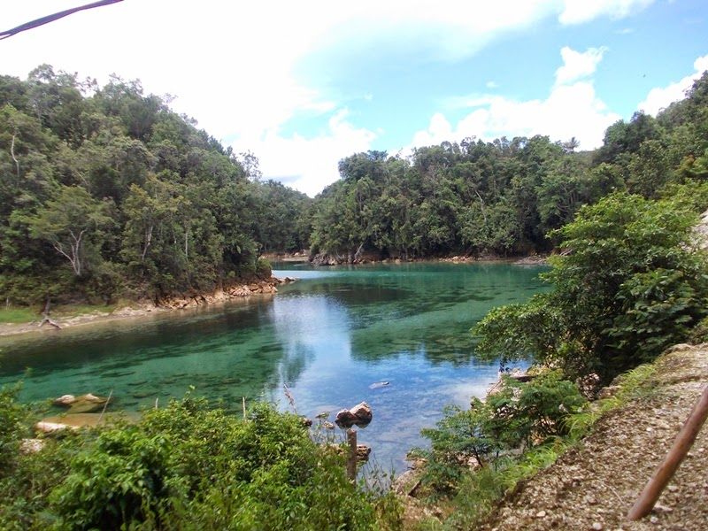

Tugas Ke-4
Nama Lengkap : Annisa jumalia
NIM : 202055202012

Deskripsi :
Pulau Papua memang memiliki sejuta rahasia yang belum tersentuh oleh tangan manusia. Tepatnya di Provinsi Papua Barat ada sebuah danau seluas 980 Hektare ini memiliki keindahan yang menakjubkan. Danau Ayamaru namanya yang merupakan warisan nenek moyang bagi suku besar Maybrat. Tidak banyak wisatawan yang mengetahui keberadaan danau ini sehingga Danau Ayamaru selalu sepi dari pengunjung. Danau Ayamaru berlokasi di Distrik Ayamaru, Kabupaten Maybrat, Kota Sorong.